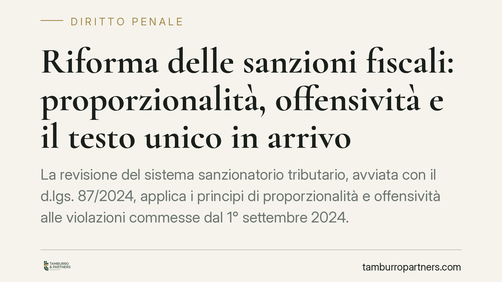

Riforma delle sanzioni fiscali: proporzionalità, offensività e il testo unico in arrivo
La revisione del sistema sanzionatorio tributario, avviata con il d.lgs. 87/2024, applica i principi di proporzionalità e offensività alle violazioni commesse dal 1° settembre 2024. È in fase di attuazione un testo unico destinato a riordinare sanzioni amministrative e penali. Per contribuenti e professionisti cambia il metodo di valutazione del rischio e la strategia difensiva nei procedimenti in corso.

Il contesto della riforma
Il sistema delle sanzioni tributarie ha conosciuto negli ultimi mesi una trasformazione sostanziale. Il d.lgs. 87/2024 ha riscritto porzioni rilevanti dell'impianto sanzionatorio amministrativo e inciso sul coordinamento con quello penale.
Il disegno di riordino prevede, in prospettiva, un testo unico che raccolga in un corpo organico la disciplina oggi distribuita tra più fonti, tra cui il d.lgs. 472/1997 per le sanzioni amministrative e il d.lgs. 74/2000 per i reati tributari. La tempistica di entrata in vigore del testo unico non è a oggi definitivamente consolidata e va verificata alla luce dei successivi provvedimenti attuativi.
Inquadramento normativo
Il d.lgs. 87/2024 ha riformato il regime delle sanzioni amministrative tributarie introducendo una più marcata attenzione alla proporzionalità della sanzione rispetto alla gravità della violazione e al principio di offensività, per cui la condotta merita sanzione in quanto effettivamente lesiva dell'interesse erariale.
Il punto temporale è decisivo. Le violazioni commesse fino al 31 agosto 2024 restano assoggettate al regime previgente. Quelle commesse dal 1° settembre 2024 rientrano nel nuovo quadro, generalmente più favorevole sotto il profilo della misura delle sanzioni. Questa frattura temporale va tenuta presente: il principio del *favor rei*, che impone di applicare il trattamento più favorevole al trasgressore, opera entro limiti precisi e la sua portata va letta alla luce dell'intervento riformatore, che ha modificato l'impianto normativo di riferimento.
Sul versante penale, restano il perno del sistema le soglie di punibilità e le cause di non punibilità dei reati tributari disciplinate dal d.lgs. 74/2000. Il raccordo con la sanzione amministrativa va valutato anche sotto il profilo del ne bis in idem: il divieto di essere puniti due volte per lo stesso fatto incide sul coordinamento tra procedimento tributario e procedimento penale, e condiziona le scelte difensive quando le due sanzioni rischiano di sovrapporsi sulla medesima condotta.
Implicazioni pratiche
Per il contribuente e per il professionista che lo assiste, la riforma non è un mero ritocco di aliquote. Cambia il metodo.
La valorizzazione di proporzionalità e offensività apre spazi argomentativi nuovi. Una violazione formale, priva di danno erariale concreto, può essere contestata su un piano diverso rispetto al passato: non solo sul *quantum*, ma sulla stessa configurabilità della sanzione quando manca un'effettiva lesione dell'interesse protetto.
Sul piano operativo, questo si traduce in una lettura più analitica degli atti di contestazione. Occorre distinguere la natura della violazione, individuare con precisione la data della condotta e verificare quale regime sia applicabile. Gli studi di categoria hanno segnalato che il riordino amplierà i margini di riduzione delle sanzioni, ma la concreta applicazione dipenderà dal caso specifico e dall'orientamento che consolideranno prassi e giurisprudenza.
Nel coordinamento con il penale, la verifica delle soglie e delle cause di non punibilità del d.lgs. 74/2000 resta prioritaria, così come la valutazione del possibile effetto del *ne bis in idem* sulle posizioni già definite in sede amministrativa.
Cosa fare in concreto
- Verificare la data di commissione di ciascuna violazione per stabilire se si applichi il regime ante o post 1° settembre 2024.
- Riesaminare le posizioni aperte e gli atti di contestazione pendenti alla luce dei principi di proporzionalità e offensività.
- Distinguere le violazioni meramente formali da quelle con danno erariale effettivo, documentando l'assenza di offensività ove ricorra.
- Valutare l'eventuale sovrapposizione tra sanzione amministrativa e profilo penale, controllando soglie e cause di non punibilità del d.lgs. 74/2000.
- Monitorare i provvedimenti attuativi del testo unico per anticipare l'impatto sulle strategie di definizione e difesa.
---
Contributo informativo a cura di Tamburro & Partners Avvocati. Non costituisce parere legale.
Ogni condominio ha una storia a sé.
Se gestisci un'amministrazione e vuoi un confronto su una specifica questione condominiale, scrivi allo studio. Ti rispondiamo entro un giorno lavorativo.